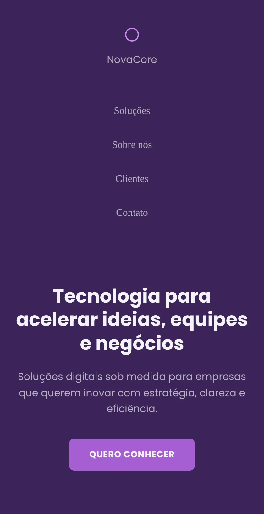
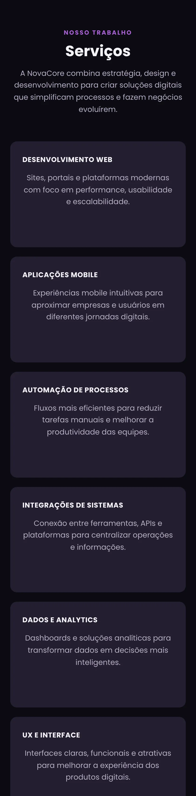
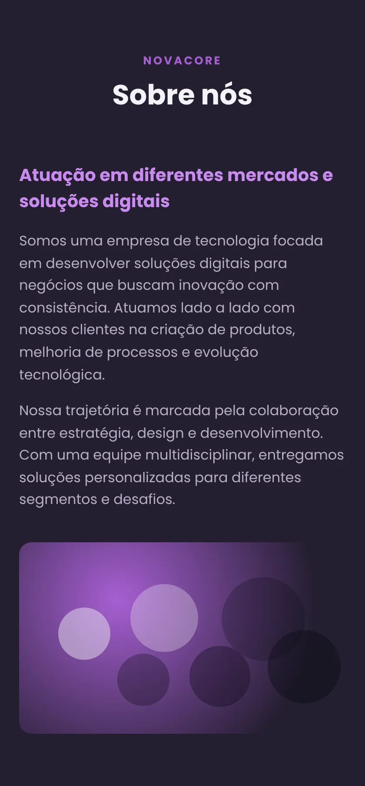
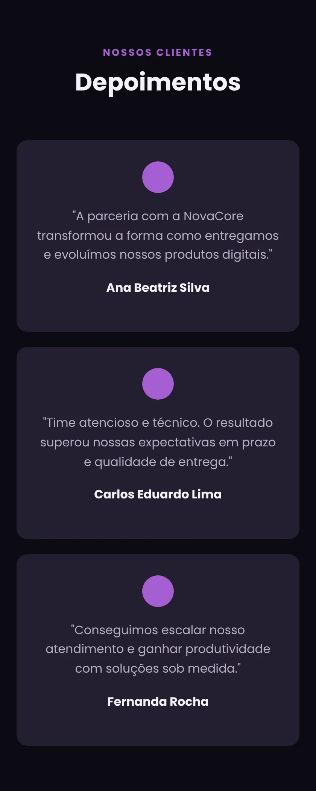
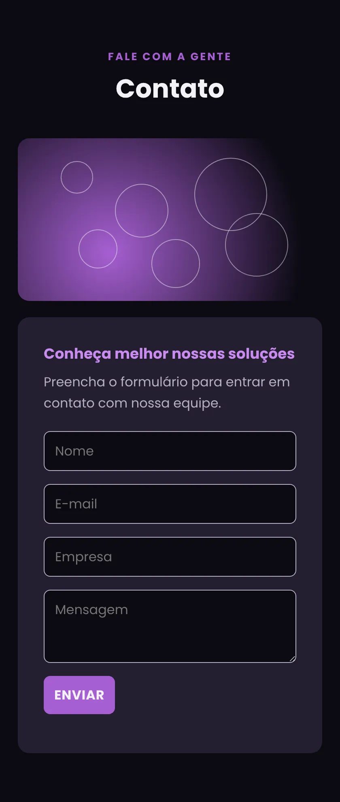
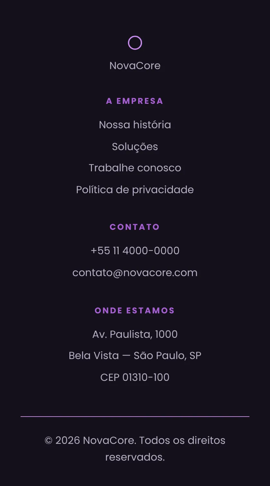

Landing page de uma empresa fictícia de soluções digitais. A atividade era revisar tudo o que vimos antes dos frameworks, então cada parte foi escrita à mão, só com HTML e um arquivo de CSS.
O que tem no site
- Menu com links que rolam até cada seção
- Abertura com chamada e botão “Quero conhecer”
- Seis serviços em cards: web, mobile, automação, integrações, dados e UX
- Seção sobre a empresa e três depoimentos de clientes
- Formulário de contato e rodapé com links, telefone e endereço
O que pratiquei
- Estrutura semântica com header, nav, main, section e footer
- Flexbox para o menu, os cards e o rodapé
- Classes reutilizáveis para títulos, textos e botões
- Efeitos de hover e transições nos botões
- Media query para adaptar o layout a telas de até 700px
Tecnologias: HTML, CSS, Flexbox e fonte Poppins
Seções do site
-

Abertura
Menu e chamada com o botão “Quero conhecer”
Tela de celular
Ver print inteiro -

Serviços
Seis serviços apresentados em cards
Tela de celular
Ver print inteiro -

Sobre nós
Apresentação da empresa e da equipe
Tela de celular
Ver print inteiro -

Depoimentos
Três clientes falando da parceria
Tela de celular
Ver print inteiro -

Contato
Formulário com nome, e-mail, empresa e mensagem
Tela de celular
Ver print inteiro -

Rodapé
Links, telefone e endereço
Tela de celular
Ver print inteiro